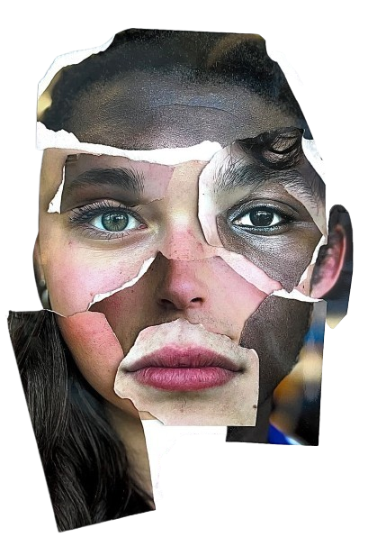

what is
racism

definition
racism is the belief that certain races are inherently superior or inferior to others. It goes beyond personal prejudice — it’s a complex system of discrimination and power that operates at individual, cultural, and institutional levels. Racism leads to unequal treatment, restricted opportunities, and harm to people based solely on their racial or ethnic identity. While it often involves visible acts like slurs or violence, racism also shows up in more hidden ways, like biased hiring practices, unequal education systems, or media portrayals that reinforce stereotypes. Understanding racism means recognizing that it is not just about individual attitudes but also about the systems and structures that uphold racial inequality.
why it matters
racism affects not only those who experience it directly but also society as a whole. It creates divisions between people, promotes fear and misunderstanding, and blocks the development of fair and inclusive communities. The impact of racism is felt in many areas — from education and healthcare to employment and justice. When groups of people are consistently treated unfairly, entire generations suffer the consequences, leading to cycles of poverty, trauma, and social exclusion. Recognizing racism is the first step toward changing it. By understanding how racism works, we can build more equitable systems and ensure everyone is treated with dignity and respect.
forms of it
- individual racism includes personal beliefs, words, and actions rooted in racial prejudice, like bullying or making assumptions based on someone’s race.
- institutional racism appears in policies and practices that unfairly disadvantage racial groups, even if unintentionally — such as school funding models or biased hiring systems.
- systemic racism refers to how institutions work together over time to maintain racial inequality.
- cultural racism can be seen in how one culture is treated as the "default" or "normal," while others are erased, mocked, or devalued.
- even internalized racism exists, when people begin to believe harmful messages about their own racial group